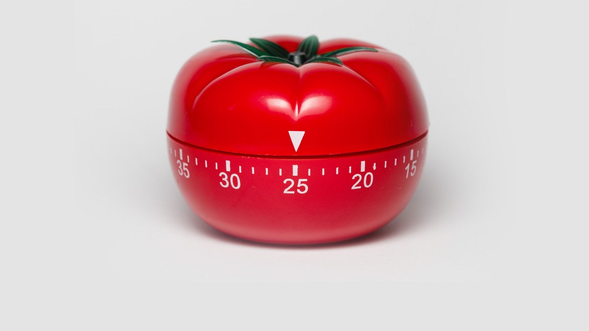
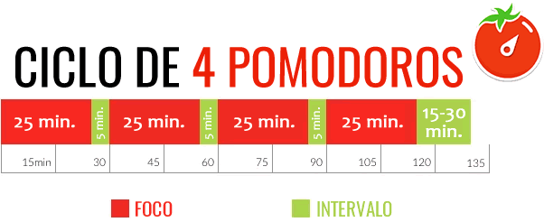

Tecnica para aumentar sua produtividade
Origem
No ano de 1988 um italiano chamado Francesco Cirillo desenvolveu a tecnica pomodoro(tomate), a tecnica possui esse nome por referenciar o cronometro gastronomico que possui a forma de um tomate.

Essa tecnica tinha o intuito de aumentar a produtividade, agiliziando as tarefas.
Como utilizar
Existem inumeras variações dessa tecnica e a forma de aplica-la. Mas de forma geral são realizados os seguintes passos.
1. Planejar uma lista de tarefas, priorizando as tarefas do dia atual.
2. Ajustar algum cronometro com 25 ou 30 minutos.
3. Durante esses minutos a tarefa deve ser realizada com total concentração, evitando distrações e qualquer pausa, mesmo ir ao banheiro ou pegar agua, tente fazer essas ações antes de iniciar o cronometro.
4. ao fim da primeira sessão realizar uma pausa de 3 ou 5 minutos, nessas pausa você pode checar alguma mensagem ou escutar alguma musica, isso é de sua escolha, mas por experiencia propria utilizar o celular pode capturar muito a sua atenção, se você se distrai facilmente com redes sociais evite isso
5. Ao fim da tarefa ou quando for a 4 sessão de pomodoro, tire uma pausa maior (10-30 minutos) e zere as contagens.

Benefícios
Opinião
Minha experiencia com a tecnica foi bem proveitosa em alguns aspectos, pessoalmente eu recomendo ela para realizar atividades ou trabalhos, para o estudo em si como ver uma video aula ou ler alguma materia eu não senti tantos beneficios. Nosso cerebro demora algum tempo para entrar em um estado de "flow" que seria uma concentração e alguma atividade, diversas vezes o tempo se esgotava e eu tinha que parar perdendo um pouco do meu foco. Mas reforçando essa foi a minha experiência cada pessoa se comporta de maneira diferente, talvez para você funcione com o estudo de materias.